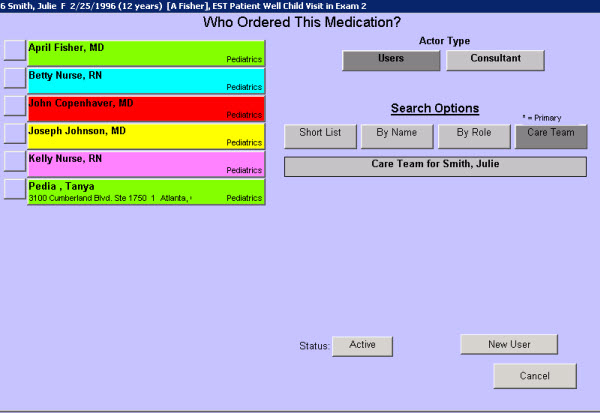

|
Description
This screen is designed to make selecting a provider or consultant quick and easy. The Care Team is automatically generated for each patient from the providers and consultants that have cared for this patient in the past.
The Care Team includes:
- Patient's primary provider
- Patient's secondary provider
- Any EncounterPRO user who owns an open encounter for the patient
- Any EncounterPRO user who owns a Task for the current, open encounter
- Any EncounterPRO user manually added to the Care Team
- Patient himself or herself
- All patients identified as relatives on the Relations tab of the Patient Demographics screen
- Any organization or institution that was selected as a recipient of a document on the Document Management screen (pharmacy)
- Any consultant or organization selected on a referral
- Any consultant selected on the specimen collection screen for send out labs or tests
Names can be added to or removed from the Care Team manually, much like items can be removed from any other short list in EncounterPRO.
Screen Example

Want to Learn More?
Related Solutions
Concept: Patient Care Team
How to: Document a Current Medication
How to: Modify a Short List
|